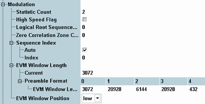

The following parameters configure the modulation settings of the LTE PRACH measurement.

Defines the number of measurement intervals per measurement cycle (statistics cycle, single-shot measurement). This value is also relevant for continuous measurements, because the averaging procedures depend on the statistic count.
For single-preamble modulation measurements, the measurement interval is completed when the R&S CMW has measured one full preamble (cyclic prefix + preamble sequence). The preamble length depends on the preamble format, see "Preambles in the Time Domain".
For multi-preamble measurements, the measurement interval is completed when the configured number of preambles has been measured, see "Number of Preambles".
The measurement provides independent statistic counts for modulation results and power dynamics results. In single-shot mode and with a shorter modulation statistic count, the modulation evaluation is stopped while the R&S CMW still continues providing new power dynamics results.
Remote command:Determines whether the restricted or the unrestricted set of NCS values is used for preamble generation. This software version supports only the unrestricted set (high-speed flag disabled).
For background information, see "Preamble Sequences".
Remote command:n/a
Specifies the logical root sequence index to be used for generation of the preamble sequence. Set this parameter to the value used by the UE.
In the standalone (SA) scenario, this parameter is controlled by the measurement. In the combined signal path (CSP) scenario, it is controlled by the signaling application.
For background information, see "Preamble Sequences".
Remote command:This parameter determines which NCS value of an NCS set is used for generation of the preamble sequence. Set this parameter to the value used by the UE.
In the standalone (SA) scenario, this parameter is controlled by the measurement. In the combined signal path (CSP) scenario, it is controlled by the signaling application.
For background information, see "Preamble Sequences".
Remote command:Enable "Auto" to detect the sequence index automatically or disable "Auto" and specify the sequence index used by the UE. A manual configuration of the sequence index can speed up the measurement.
The sequence index specifies which of the 64 preamble sequences of the cell is used by the UE.
For background information, see "Preamble Sequences".
Remote command:Length of the EVM window in samples. The standard (3GPP TS 36.101, annex F) specifies the window length as a function of the preamble format.
The R&S CMW uses the "Current" value. This value is linked to the value in the table, corresponding to the current preamble format.
The window length defines the two sets of "l / h" modulation quantities in the result tables; see "Calculation of Modulation Results".
The minimum value of one FFT symbol actually corresponds to a window of zero length so that EVMh = EVMl.
Remote command:Position of the EVM window used for calculation of the trace results. While result tables show both the results for low and high EVM window position, the diagram results are only determined for the selected window position.
Remote command: